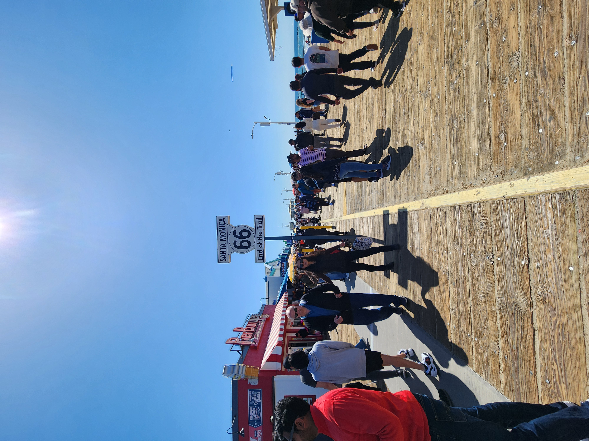
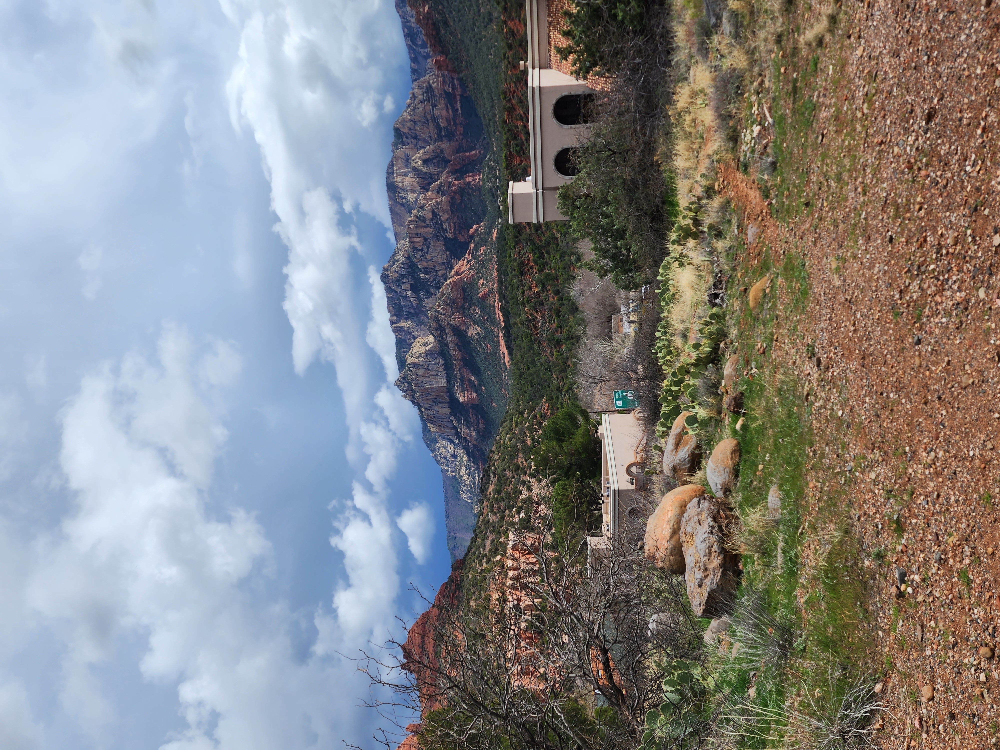
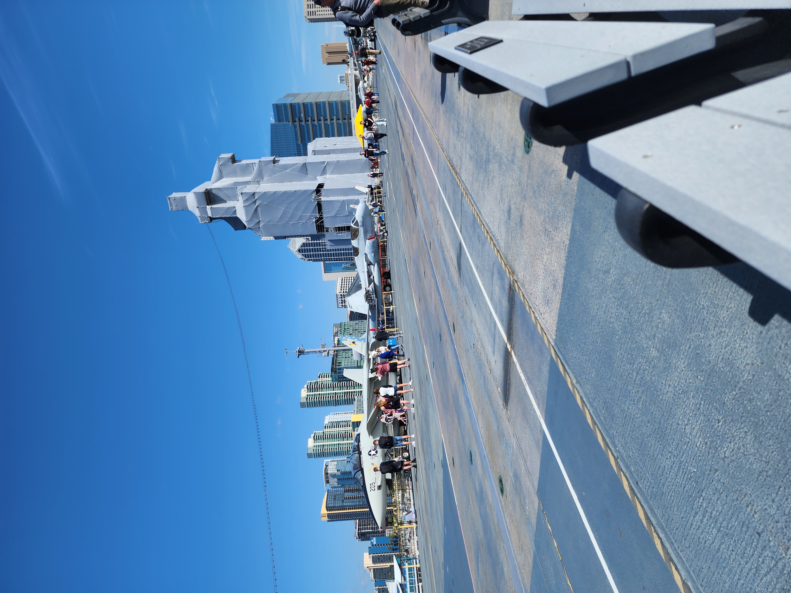
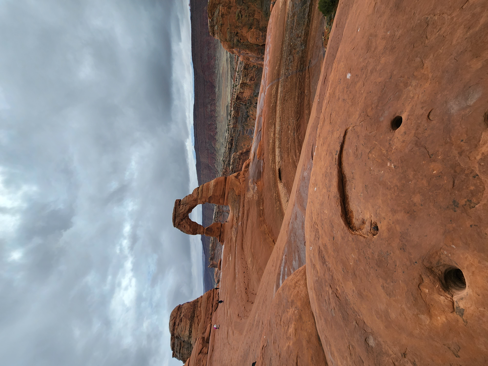
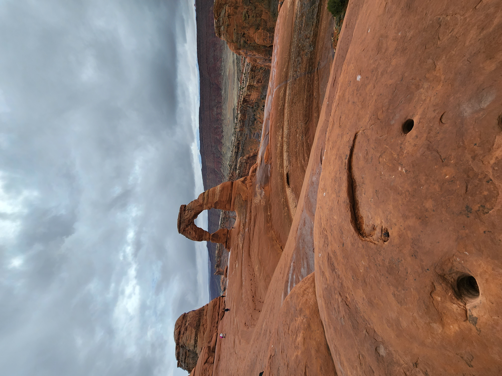

Hello everyone, thank you for joining my page, where I would like to share with you my trip to the United States.
My trip to the United States included a large number of destinations, and places where I wanted to travel and traveled in the United States. Shoham Yosef, a mentor and professional trip planner to the United States, helped me plan the trip and he also helped me throughout the trip to all destinations.
The destination I liked the most was undoubtedly Las Vegas, I'm not a person who connects with gambling and doesn't like parties but there was something about the atmosphere of Las Vegas that really attracted me. The feeling was very good.

The destination that came in second place and perhaps even overtook Vegas is the town of Sedona. The town is located in a very desert area, but its nature is breathtaking, and shows a very special angle of the desert.

The destination that closes the podium is San Francisco.
I came to San Francisco with some trepidation, especially from what I heard in the media. The fear quickly dissipated, and I was undoubtedly exposed to the most beautiful city in the entire western United States, and perhaps in the entire United States. The urban nature of the city is breathtaking, the driving experience in the city is one of the most special I have experienced in my entire life.
The calm when I felt like I was sitting on the grass looking at the Golden Bridge, really like in a movie. There are many who want to give up this place, mainly because of fear and fear of the media channels, I tell you no. Go to San Francisco, there is plenty to see and lots of beauty.

More photos from the trip:
  


 
